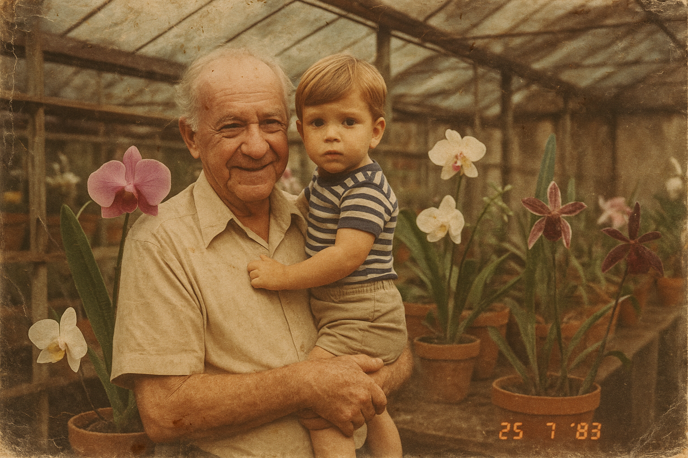

The Aguatudo Story

It all began at the farm of the award-winning orchid grower Antonio Vendramin (1922 - 1994), in the Caxambu neighborhood of Jundiaí-SP.
There, in a greenhouse with over 10,000 orchid species, an irrigation system was installed using transparent microtubes reaching each pot — innovative for the 1980s — created by Antonio Vendramin Filho.
The Aguatudo project was enhanced by Computer Engineer Fabio S. Vendramin, blending technology and sustainability. With sensitivity and vision, he incorporated weather data into the system to optimize water usage.
The system includes user-friendly and easy-to-install accessories to help those who love taking care of their plants.